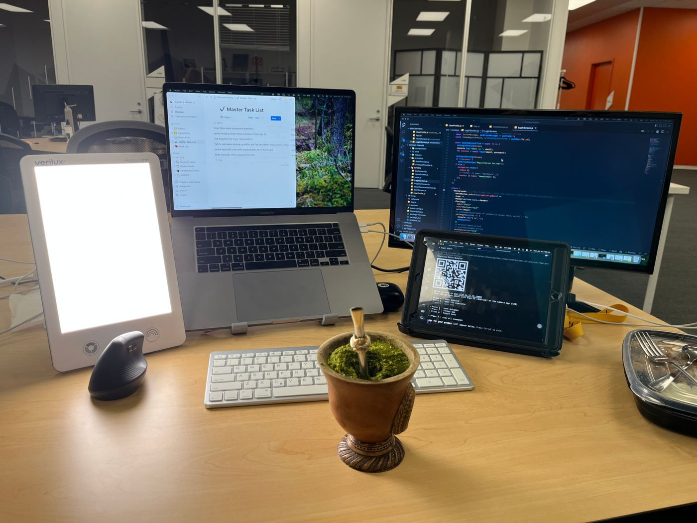
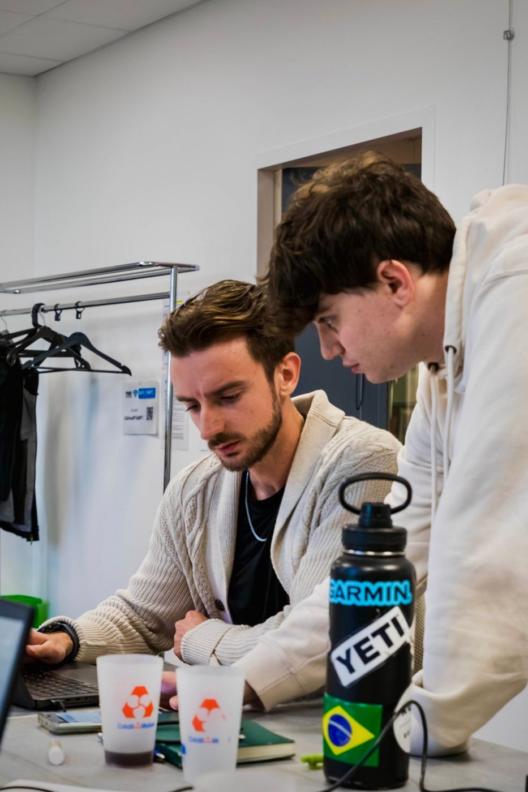

GabrielDalmoro
I build automations, websites and software that give people their time back. Then I go outside.
Where to?
-
01
The Studio
For foundersAutomation for busy founders. I take the repetitive work off your plate, so you get 10+ hours back every week.

-
02
Things I've built
ProjectsWebsites, automations and a SaaS for private chefs. Built for clients and for people I love.

-
03
How I got here
My storyFrom Brazil to the Alps, via Canada. The experiences that shaped how I work, and what each one gave me.

-
04
About me
Story + languagesWhere I come from, what my parents gave me, and the four languages I speak (with two on the way).

Right now

A SaaS for private chefs in France, with Elisa.
My automation studio. Less admin, more impact for busy founders.
My dad launch FITtoExcel, a fitness-tech startup, in Canada.
German. Very much a beginner. Italian is next.
Most mornings. Snowboarding most winter weekends.
For family, faith, and every new day.